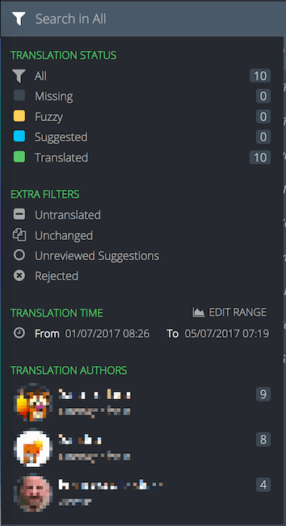
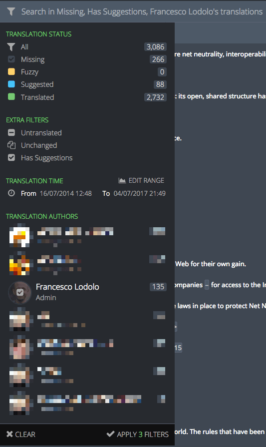
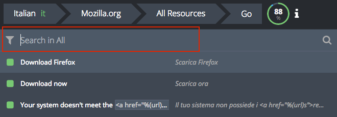

Search and filters
Strings in Pontoon can be filtered by their state. A string can be in one of the following states:
- Missing: string is not available in the localized file and doesn’t have any translations or suggestions in Pontoon.
- Suggested: at least one suggestion has been submitted for this string. Note that, in this case, the translation only exists within Pontoon database, it’s not saved to the localized file.
- Translated: string has an approved translation.
- Fuzzy: string is marked as fuzzy in the localized file.
Suggestions can be in two states:
- Unreviewed: string has been suggested, but not approved or rejected.
- Rejected: string has been reviewed and rejected by a translator.
There are some extra criteria that can be used to filter strings:
- Untranslated: this will display strings that are either suggested, missing, or fuzzy. Basically, anything but translated. Once selected, you will also notice that those 3 filters are automatically checked.
- Unchanged: string is identical to the reference language (normally en-US).
- Unreviewed suggestions: this will display strings that have at least one unreviewed suggestion. Note that it will include strings in suggested, fuzzy and translated state, as long as they have unreviewed suggestions.
- Rejected: show strings that have rejected suggestions.
By clicking on the funnel icon on the left, it’s possible to access filters.

At this point it’s possible to:
- Click directly on the description of one of the filters. This will select and activate only this filter, and the search field placeholder will change accordingly. For example, clicking on Missing will show only missing strings, and the placeholder will read Search in Missing.
- Click on the icons for each filter, or the user avatars, in order to apply multiple filters. When you hover the icons, you will notice that they transform into checkmarks. A new button APPLY X FILTERS will appear at the bottom of the panel, where
Xis the number of active filters.

In this case 3 filters are selected.
To select a time range, you need to click EDIT RANGE, then either pick one of the defaults (30 days, 7 days, 24 hours, 60 minutes), or use the date picker (or slider) to adapt the range. Click on SAVE RANGE to store the range, then apply the filter.
It’s possible to search within a project using the search field. Searches include strings, string IDs and comments.

Note that searches take active filters into account, for example a search would be performed only on missing strings if that filter is selected.